CustomizeThePlot.RmdAn important feature of ggcoverage is the support of customization. This vignette will show how to customize the plot from the following two aspects:
Before we start, let me introduce the internal structure of layers provided by ggcoverage. ggcoverage provides twelve layers, and geom_coverage, geom_protein are based solely on ggplot2, while the others are based on ggplot2 and patchwork.
| Modules | Type | Description | Object |
|---|---|---|---|
| geom_coverage | Coverage | Create genome coverage plot | ggplot2 |
| geom_base | Annotation | Add base, base frequency and amino acid annotations | ggplot2, patchwork |
| geom_cnv | Annotation | Add CNV annotation | ggplot2, patchwork |
| geom_gc | Annotation | Add GC content annotation | ggplot2, patchwork |
| geom_gene | Annotation | Add gene annotation | ggplot2, patchwork |
| geom_transcript | Annotation | Add gene’s transcripts annotation | ggplot2, patchwork |
| geom_peak | Annotation | Add peak annotation | ggplot2, patchwork |
| geom_ideogram | Annotation | Add chromosome ideogram annotation | ggplot2, patchwork |
| geom_tad | Annotation | Add contact map annotation | ggplot2, patchwork |
| geom_link | Annotation | Add link annotation | ggplot2, patchwork |
| geom_protein | Coverage | Create protein coverage plot | ggplot2 |
| geom_feature | Annotation | Add feature annotation for genome/protein coverage | ggplot2, patchwork |
By the way, all inner themes used are available in theme_ggcoverage.R
# library
library(ggplot2)
library(patchwork)
library(tidyverse)
library(ggcoverage)
library(rtracklayer)
# prepare gtf
gtf.file = system.file("extdata", "used_hg19.gtf", package = "ggcoverage")
gtf.gr = rtracklayer::import.gff(con = gtf.file, format = 'gtf')
# sample metadata
sample.meta = data.frame(SampleName=c('Chr18_MCF7_ER_1','Chr18_MCF7_ER_2','Chr18_MCF7_ER_3','Chr18_MCF7_input'),
Type = c("MCF7_ER_1","MCF7_ER_2","MCF7_ER_3","MCF7_input"),
Group = c("IP", "IP", "IP", "Input"))
sample.meta## SampleName Type Group
## 1 Chr18_MCF7_ER_1 MCF7_ER_1 IP
## 2 Chr18_MCF7_ER_2 MCF7_ER_2 IP
## 3 Chr18_MCF7_ER_3 MCF7_ER_3 IP
## 4 Chr18_MCF7_input MCF7_input Input
# track folder
track.folder = system.file("extdata", "ChIP-seq", package = "ggcoverage")
# load bigwig file
track.df = LoadTrackFile(track.folder = track.folder, format = "bw", region = "chr18:76822285-76900000",
meta.info = sample.meta)
# check data
head(track.df)## seqnames start end score Type Group
## 1 chr18 76820285 76820400 219.658 MCF7_ER_1 IP
## 2 chr18 76820401 76820700 0.000 MCF7_ER_1 IP
## 3 chr18 76820701 76821000 439.316 MCF7_ER_1 IP
## 4 chr18 76821001 76821300 219.658 MCF7_ER_1 IP
## 5 chr18 76821301 76821600 0.000 MCF7_ER_1 IP
## 6 chr18 76821601 76821900 219.658 MCF7_ER_1 IP
track.df = track.df %>% dplyr::filter(Type %in% c("MCF7_ER_1", "MCF7_input"))
# create mark region
mark.region=data.frame(start=c(76822533),
end=c(76823743),
label=c("Promoter"))
# check data
mark.region## start end label
## 1 76822533 76823743 Promoter
# create basic coverage plot
basic.coverage = ggcoverage(data = track.df, color = "auto", range.position = "out",
mark.region=mark.region, show.mark.label = FALSE)
basic.coverage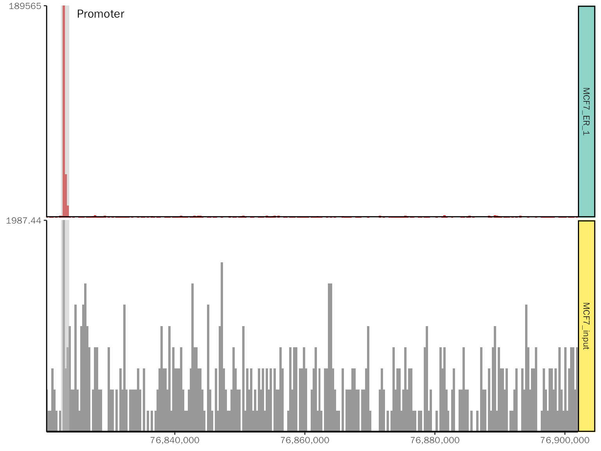
Customize the plot generated by ggcoverage:
basic.coverage +
# add title
labs(title = "chr18:76,822,285-76,900,000") +
theme(plot.title=element_text(hjust=0.5)) +
# change color
scale_fill_manual(values = c("MCF7_ER_1"="green", "MCF7_input"="yellow")) +
# add rect
geom_rect(
data = data.frame(start = 76840533, end = 76842533),
aes_string(xmin = "start", xmax = "end", ymin = "0", ymax = "Inf"),
fill = "red", alpha = 0.6
)## Scale for fill is already present.
## Adding another scale for fill, which will replace the existing scale.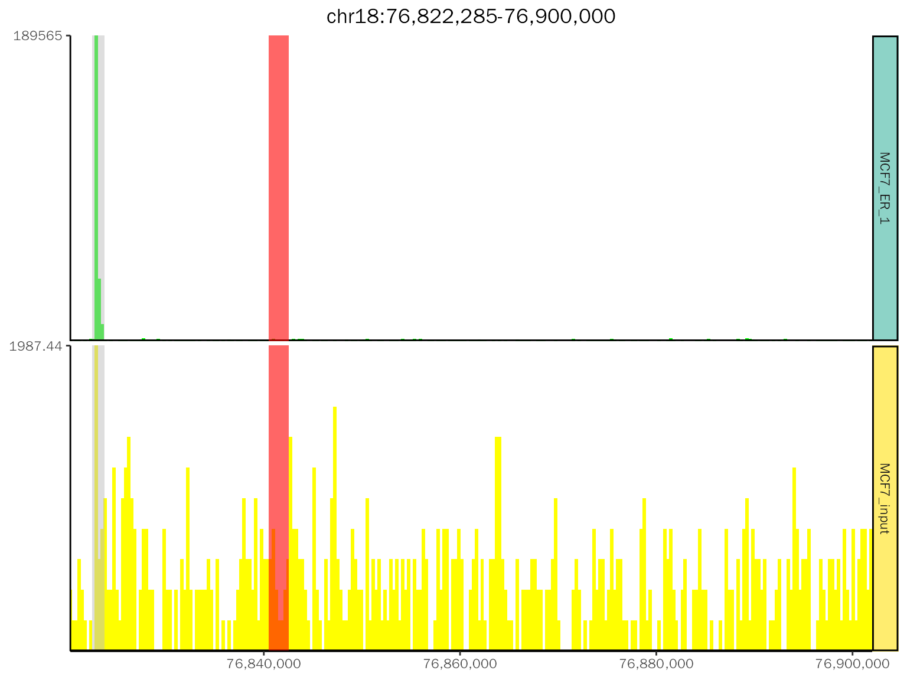
patchwork is a ggplot2 extension, which is used to combine separate ggplots into the same graphic.
The example plot:
# get consensus peak file
peak.file = system.file("extdata", "ChIP-seq", "consensus.peak", package = "ggcoverage")
# example plot
chip.coverage = basic.coverage + labs(title = "chr18:76,822,285-76,900,000") +
theme(plot.title=element_text(hjust=0.5)) +
geom_gene(gtf.gr=gtf.gr, arrow.length = 0.04,arrow.size=0.25,
gene.size = 0.75,
utr.size = 1.5,
exon.size = 2.5,label.size = 2.5, plot.height = 0.3) +
geom_peak(bed.file = peak.file, plot.height = 0.1) +
geom_ideogram(genome = "hg19",plot.space = 0, plot.height = 0.15)## Loading ideogram...## Loading ranges...## Scale for x is already present.
## Adding another scale for x, which will replace the existing scale.
# get the class of chip.coverage
class(chip.coverage)## [1] "patchwork" "gg" "ggplot"
# output the plot
chip.coverage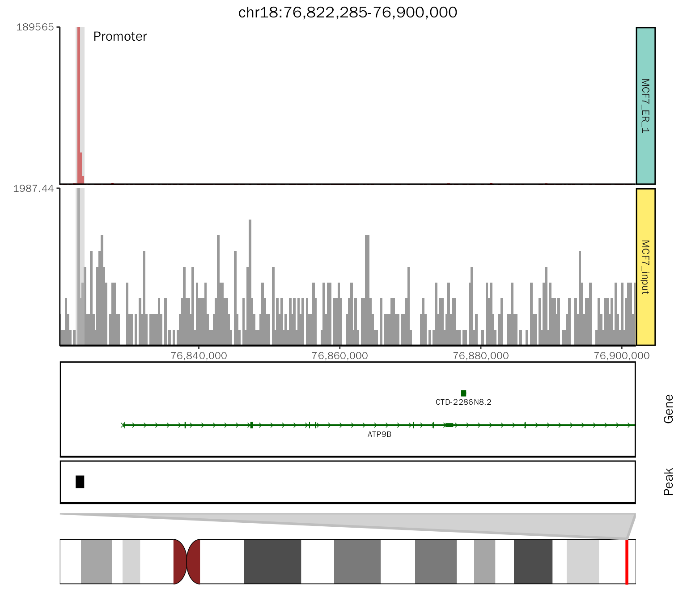
The above plot is a nested combination of ggplot2 object. We can obtain the elements (Pay attention to changes in object):
# obtain the track other than ideogram
chip.coverage[[1]]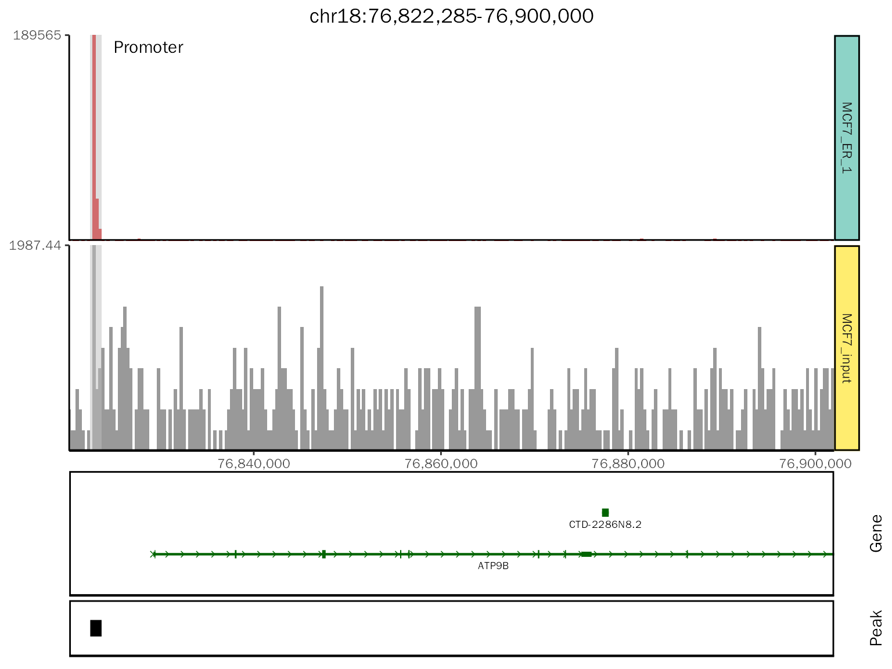
# class
class(chip.coverage[[1]])## [1] "patchwork" "gg" "ggplot"
# obtain the track other than peak
chip.coverage[[1]][[1]]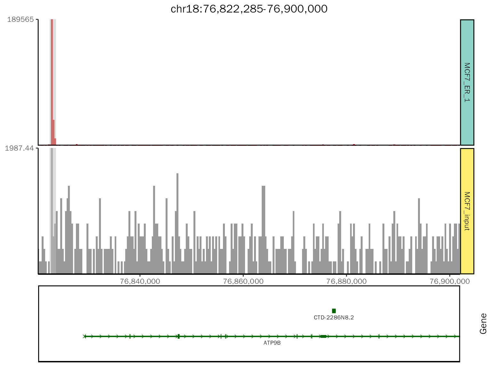
# class
class(chip.coverage[[1]][[1]])## [1] "patchwork" "gg" "ggplot"
# obtain the gene track
chip.coverage[[1]][[1]][[2]]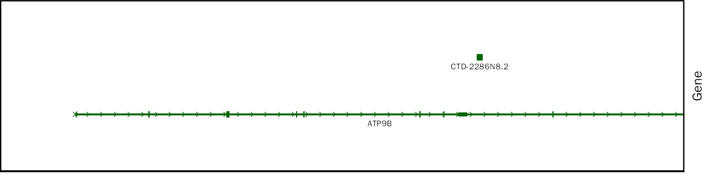
# class
class(chip.coverage[[1]][[1]][[2]])## [1] "gg" "ggplot"
# obtain the peak track
chip.coverage[[1]][[2]]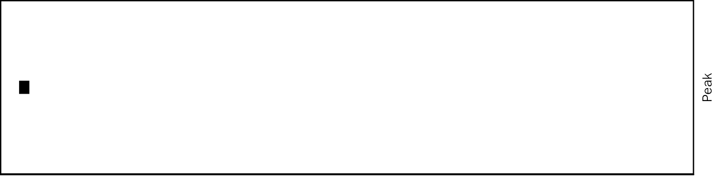
# class
class(chip.coverage[[1]][[2]])## [1] "gg" "ggplot"Add another peak info:
chip.coverage[[1]][[2]] +
# the size is the height of segment, controlled by peak.size in geom_peak
geom_segment(
data = data.frame(start = 76840533, end = 76842533),
aes_string(x = "start", xend = "end", y = "1", yend = "1"),
color = "red", size = 5
)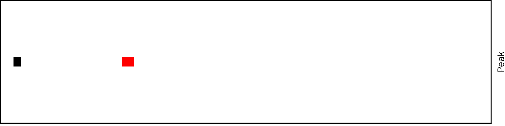
To add additional layer, we need to obtain the raw coverage data (for consistency). ggcoverage provides GetPlotData to obtain the data used to plot.
# get coverage data, the layer number is four
coverage.data = GetPlotData(plot = chip.coverage, layer.num = 4)
# inspect data
head(coverage.data)## seqnames start end score Type Group
## 1 chr18 76820285 76820400 219.658 MCF7_ER_1 IP
## 2 chr18 76820401 76820700 0.000 MCF7_ER_1 IP
## 3 chr18 76820701 76821000 439.316 MCF7_ER_1 IP
## 4 chr18 76821001 76821300 219.658 MCF7_ER_1 IP
## 5 chr18 76821301 76821600 0.000 MCF7_ER_1 IP
## 6 chr18 76821601 76821900 219.658 MCF7_ER_1 IP
str(coverage.data)## 'data.frame': 431 obs. of 6 variables:
## $ seqnames: Factor w/ 1 level "chr18": 1 1 1 1 1 1 1 1 1 1 ...
## $ start : int 76820285 76820401 76820701 76821001 76821301 76821601 76821901 76822201 76822801 76823101 ...
## $ end : int 76820400 76820700 76821000 76821300 76821600 76821900 76822200 76822800 76823100 76823400 ...
## $ score : num 220 0 439 220 0 ...
## $ Type : Factor w/ 2 levels "MCF7_ER_1","MCF7_input": 1 1 1 1 1 1 1 1 1 1 ...
## $ Group : chr "IP" "IP" "IP" "IP" ...Here, I will create a new peak layer as an example (this is a sample example that does not depend on the raw data, but when you use your own data, you should use the raw data as region constraint).
# create pseudo-peak, you can load your peak file instead (be aware of 0-based/1-based)
pseudo_peak = data.frame(chr="chr18", start = 76840533, end = 76842533)
# get region constraint
plot.region.start <- coverage.data[1, "start"]
plot.region.end <- coverage.data[nrow(coverage.data), "end"]
# create plot
peak.plot = ggplot() +
geom_segment(
data = pseudo_peak,
aes_string(x = "start", xend = "end", y = "1", yend = "1"),
color = "red", size = 5
) +
labs(y="Peak") +
theme_peak(margin.len = 0.1, x.range = c(plot.region.start, plot.region.end))
peak.plot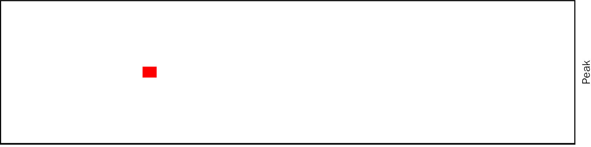
Combine the plot:
# add peak layer
add.peak = patchwork::wrap_plots(chip.coverage[[1]] + theme(plot.margin = margin(t = 0.1, b = 0.1)),
peak.plot,
ncol = 1, heights = c(1, 0.1)
)
add.peak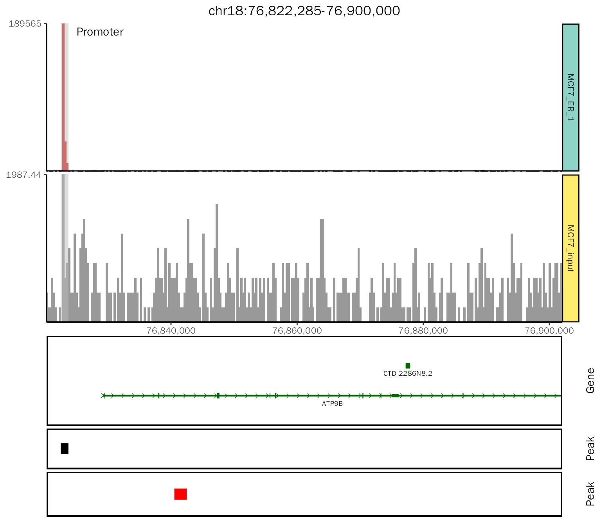
# add ideogram layers
final.plot = patchwork::wrap_plots(add.peak + theme(plot.margin = margin(t = 0.1, b = 0.1)),
chip.coverage[[2]],
ncol = 1, heights = c(1, 0.1)
)
final.plot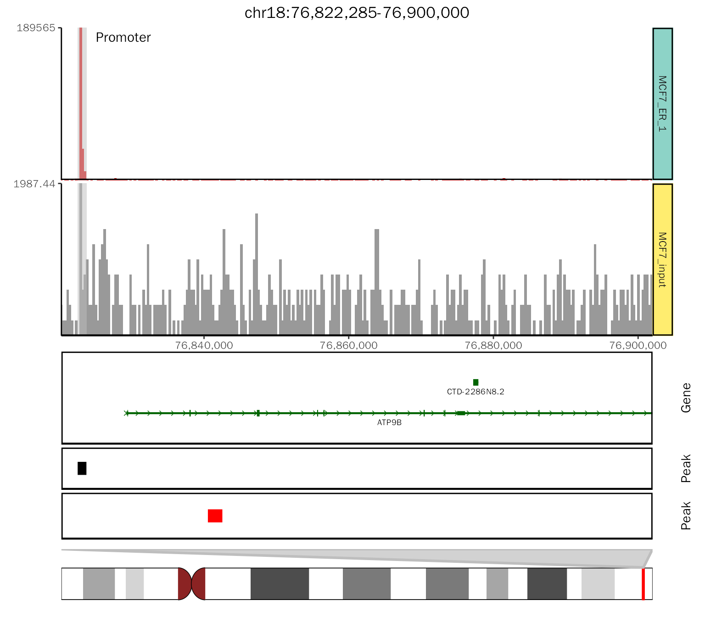